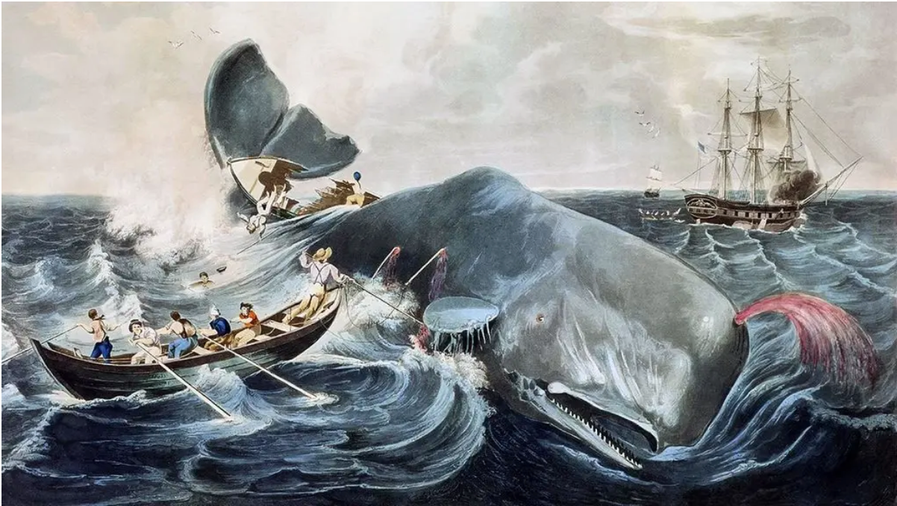
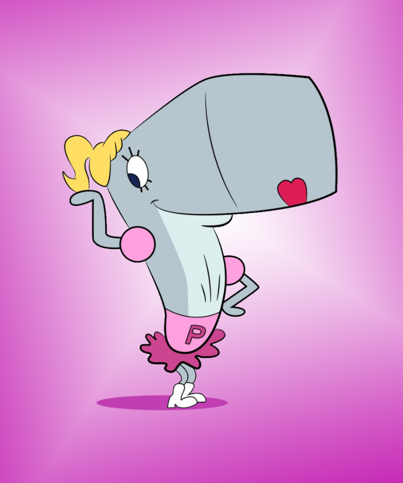

It was written by an American writer Herman Melville. It was published in London October 1851 as The Whale then a month later in New York City as Moby-Dick or The Whale.
This is a documentary that tells the story of Tilikum, a killer whale that was a performer at SeaWorld. He killed many people while in captivity. This documentary includes shocking footage and interviews that were done by Gabriela Cowperthwaite, director-producer. The interviews and footage show the mistreatment of orcas that were in captivity in this facility and the lives lost of the trainers of these mammals.
We all or most of us know about this film. It was directed by Roger Ebert in 1993. This film is about an orphan Jesse vandalizes a theme park and is then placed with foster parents and has to work at the theme park in order to make amends. He meets Willy, a young Orca whale who was also separated from his family. They then become a duo.
Pearl is Mr.Crabs daughter on the famous tv show, Spongebob.
Ⅰ Oh! The whale is free of the boundless sea, He lives for a thousand years; He sinks to rest in the the billow’s breast, Nor the roughest tempest fears; The howling blast as it hurries past, Is music to lull him to sleep, And he scatters the spray in his boisterous play, As he dashes the king of the deep. Oh! The rare old whale, ‘mid storm and gale, In his ocean home shall be, A giant in might, where might is right, And king of the boundless sea! Ⅱ A wondrous tale could the rare old whale Of the mighty deep disclose, Of skeleton forms of by-gone storms, And of treasures that no one knows; He has seen the crew, when the tempest blew, Drop down from the slippery deck, Shaking the side from his glassy side, And sporting with ocean and wreck, Then the rare old whale, ‘mid storm and gale In his ocean home shall be, A giant in might, where might is right, And king of the boundless sea. Ⅲ Then the whale shall be still dear to me When the midnight lamp burns dim, For the student’s book, and his favourite nook, Are illumed by the aid of him; From none of his tribe could we e’er imbibe So useful, so bless’d a thing; Then we’ll on land, go hand in hand To hail him the ocean king, Oh! The rare old whale, ‘mid storm and gale, In his home will ever be, A giant in might, where might is right, And king of the boundless sea!